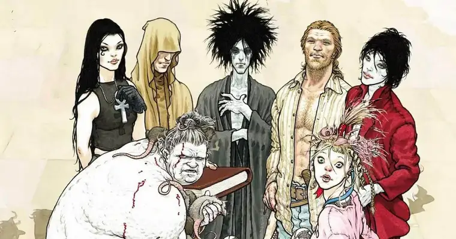
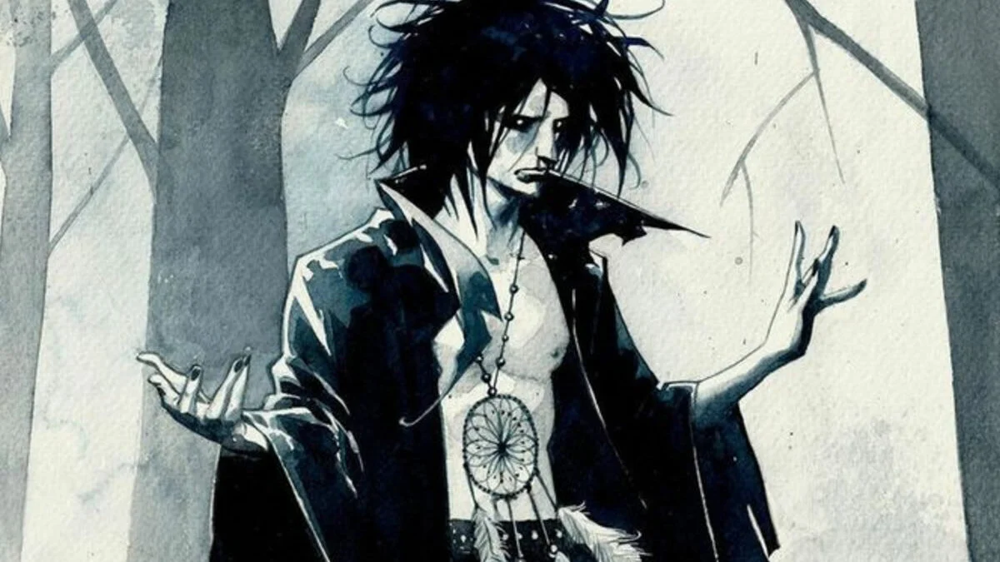
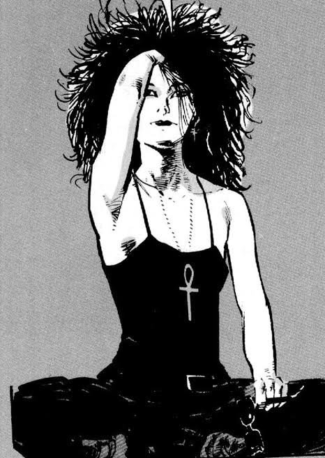
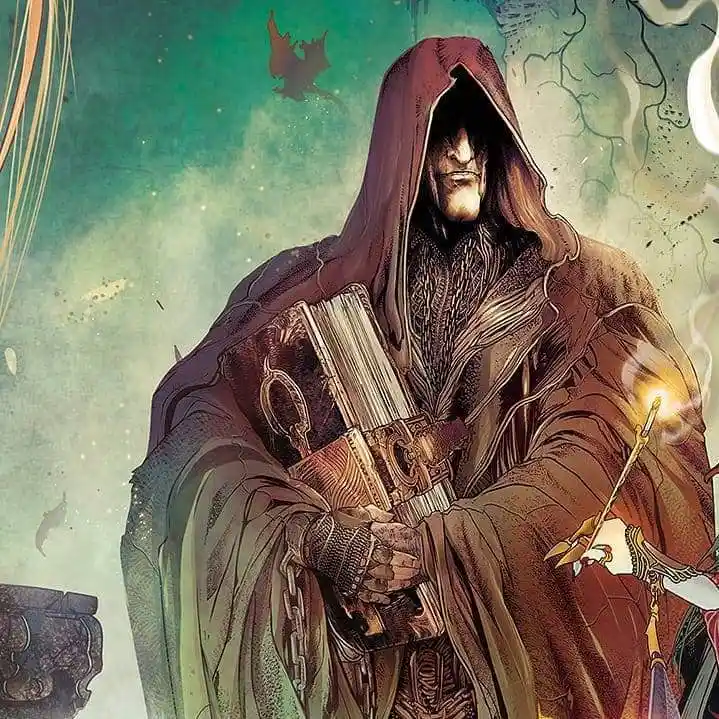

Sandman Fan Page

História
A série de hqs do universo Sandman foi impressa originalmente entre os anos de 1989 e 1996. O projeto nasceu de uma ambição do autor inglês Neil Gaiman, que tinha o desejo de reimaginar um dos heróis da era de ouro dos quadrinhos. Esse herói era o Sandman de Wesley Dodds, membro da Sociedade da Justiça que se utilizava de uma arma de areia para induzir o sono em seus oponentes.
Conhecido por vários nomes, Morpheus, personagem principal da obra de Gaiman, é o Senhor dos Sonhos e soberano do reino do Sonhar, para onde todos os seres pensantes vão ao fecharem seus olhos durante a noite. Ele reina ao lado de sua família, os perpétuos, seres multidimensionais que personificam aspectos da vida humana. São eles Morte, Desespero, Guerra, Delírio, Desejo e Destino.
A história do Oniromante começa quando um mortal aspirante a mago chamado Roderick Burgess tenta executar um ritual para aprisionar sua irmã, a Morte, mas acaba invocando Morpheus, a quem ele aprisiona por mais de 4 séculos, gerando danos incalculáveis ao mundo desperto. Depois de séculos aprisionado, Morpheus consegue escapar de seu cativeiro e se vinga do filho de Burgess. Após consumar sua vingança, Sandman parte em uma missão para recuperar suas ferramentas de ofício, roubadas durante seu período em cativeiro.
Os Perpétuos
Os perpétuos são considerados entidades acima dos deuses. Cada perpétuo habita um reino, e cada reino corresponde à essência de um perpétuo. Os perpétuos e seus domínios são responsáveis por moldar o universo como o conhecemos.
Sonho:
Morpheus, Kai'ckull, Sonho, Oniromante. Essas são apenas algumas das alcunhas dadas ao Senhor dos Sonhos pelos humanos que visitam seus domínios. Irmão mais novo da Morte, ele foi capturado por um grupo ocultista e, consequentemente, foi separado de seus domínios, o que causou a doença conhecida como epidemía do sono, inspirada em eventos reais que transcorreram após a primeira guerra mundial.
Morte:
A Morte é considerada uma das mais antigas dos perpétuos. Segundo as lendas, ela nasceu junto ao primeiro ser vivo e deixará de existir quando a vida for extinta no Universo. Ela era o alvo do ritual que capturou seu irmão mais novo.
Destino:
A Morte é considerada uma das mais antigas dos perpétuos. Segundo as lendas, ela nasceu junto ao primeiro ser vivo e deixará de existir quando a vida for extinta no Universo. Ela era o alvo do ritual que capturou seu irmão mais novo.
Curiosidades:
Ferramentas:
Morpheus possuí 3 ferramentas: um elmo, um rubi e uma algibeira. O elmo, forjado a partir do crânio de um deus antigo, é considerado seu brasão diplomático. O rubi, criado por Morpheus para conter uma parte de sua essência divina, é usado para dar vida aos sonhos e pesadelos moldados pelo Oniromante. A algibeira contém as areias do reino dos sonhos, e fornece a matéria prima para que o Sonho possa dar forma aos sonhos e pesadelos que cria.
Rob Gadling:
No início, Morpheus não considerava prudente caminhar entre os mortais. Graças a eventos passados, ele aprendeu que tal ato pode ter consequências terríveis para o mundo desperto. Porém, compelido por sua irmã, Morte, Morpheus decide caminhar uma vez mais entre os mortais e encontra um homem chamado Rob Gadling em uma taverna na Inglaterra medieval. Ao ouvir Gadlind desdenhar da morte e afirmar que nunca iria morrer, o Oniromante pede pela intervenção de sua irmã e concede a Rob o dom da imortalidade. Ao longo dos séculos, os dois desenvolvem uma amizade forte que transcende os anos.